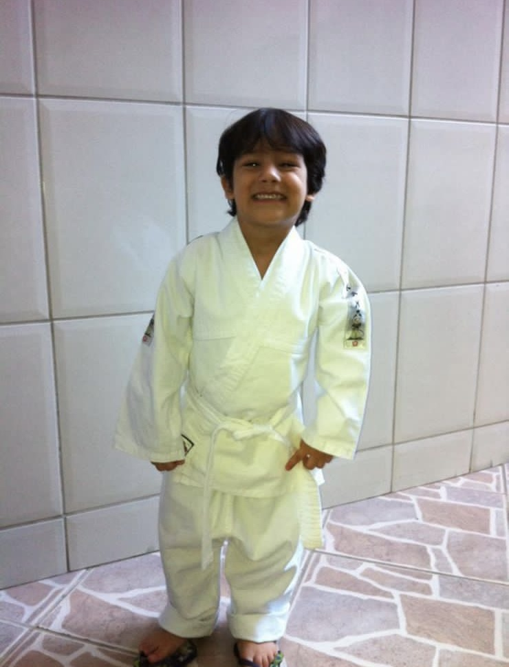
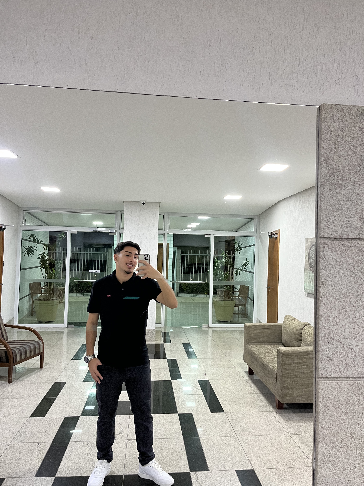
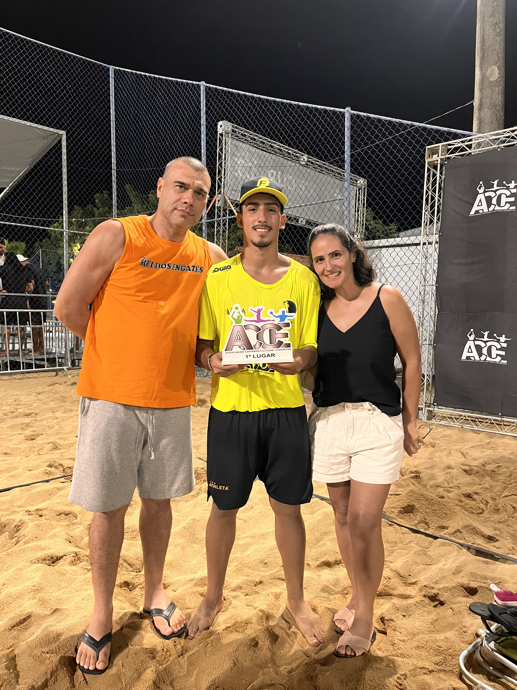
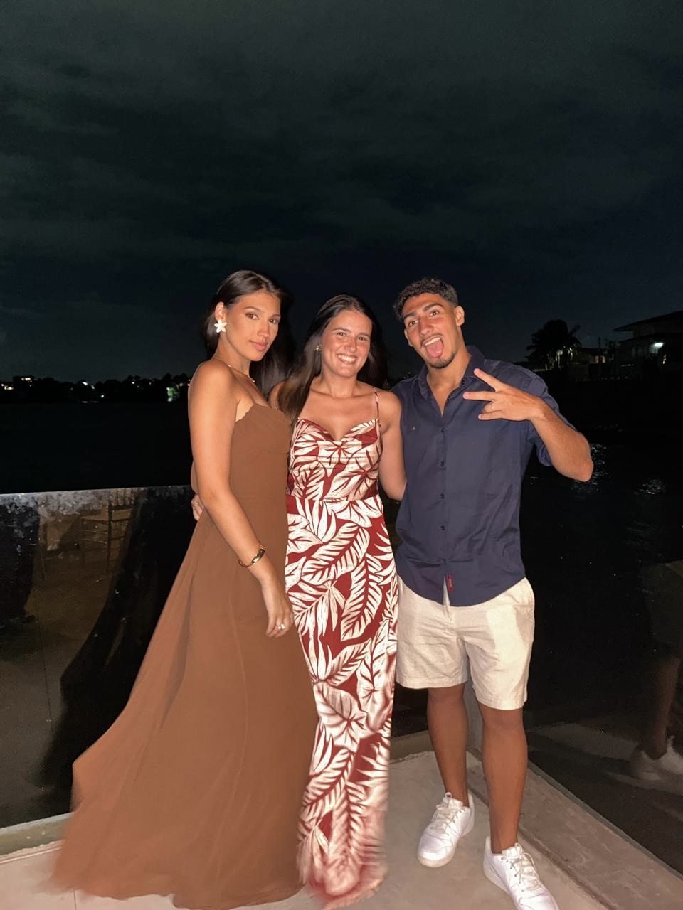
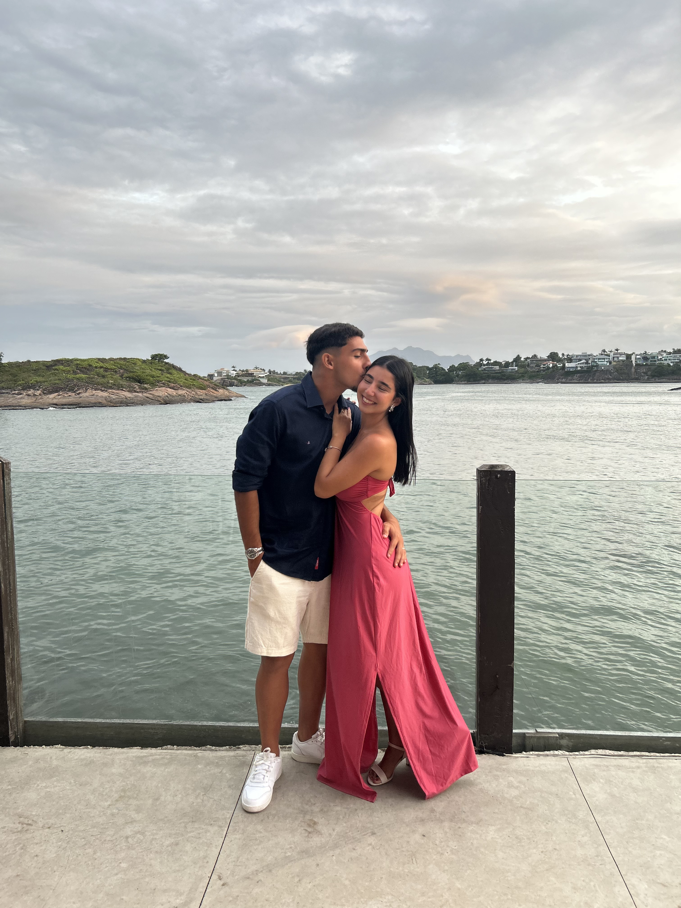

Meu nome é Francisco, tenho 18 anos e curso Ciências da Computação na UVV. Vou contar um pouco da minha história para vocês, desde pequeno sempre fui chegado pelo lado da tecnologia e também de esportes, sempre gostei dos dois até então, so que o tempo foi passando e como todos os pais falam, quando você vai crescendo você deixa um pouco de lado essa parte tecnológica, comigo foi um pouco assim, mas eu nunca deixei totalmente de lado, tanto que a tecnologia foi crescendo cada vez mais, várias coisas novas surgindo e eu acompanhava na época, mas quando fui crescendo meu pai falava comigo, "Aprende a programar que vai ser o futuro" como eu era "criança" acabava que eu nao escutava muito ele mesmo gostando da área, nunca imaginei que eu iria fazer esse curso, quando eu conversava com as pessoas eu falava que queria odontologia ou que queria ser militar, mas graças a Deus eu larguei esses pensamentos, não combina nada comigo, mas, eu consegui me encontrar nesse curso a um tempo, segui o que o meu pai falou, fiz uns cursos antes de começar a faculdade e começei a gostar, e olha aonde nós estamos, é um começo de uma história.
Tenho como objetivo profissional ser um ótimo programador (um dos melhores), gosto de ser o melhor em tudo o que eu faço e vou estudar muito para realizar isso, tenho pouco tempo na área aprendendo , mas de pouco em pouco vou evoluindo, uma frase que eu tenho em mente e vou levar comigo para o resto da minha carreira, é uma que aprendi com meu pai "se o homem consegue fazer, eu tambem consigo", então basicamente se uma pessoa faz eu também faço, isso se resume em todas as áreas, hoje em dia o diferencial nao é a pessoa que sabe, é a pessoa que faz, cria e desenvolve isso sim é um diferencial, então vou ser sempre proativo buscando melhorar a cada dia. Tenho umas areas em mente que me interessam bastante, ser um profissional na area de cyber segurança, desenvolvedor e devOPs são as que mais estão me deixando curioso em aprender mais sobre, mas sei que existe várias áreas dentro da tecnnologia, então nao sei muito ao certo para o que vou trilhar, mas o que eu mais me interesso é a área de cyber, e talvez devo seguir mais esse caminho.
Desde mais novo eu sempre trabalhei junto com meu pai, ele sempre foi bem rígido comigo sobre essas coisas de trabalhar e aprender desde novo, ele tem uma loja que mexe com reboque, engate e reparos com carro, sempre gostei de trabalhar com ele por que eu sempre ia aprendendo uma coisa nova e trabalhar nao é desperdiçar tempo e sim é adquirir conhecimento em certas áreas, mas ele não mexe so com isso, a frase que eu disse aprendi com ele, então ele sempre faz tudo sozinho ao invés de por alguem para fazer, com isso, peguei um certo tipo de habilidade com ele em certas coisas, como por exemplo:
|
|
No meu tempo livre eu costumo fazer diversas coisas, como eu sou atleta semi-profissional de futevôlei eu treino e me exercito bastante, então costumo a ir na academia, praia e viajar para jogar,
mas fora isso, tenho outros hobbys, como, jogar futebol, criação de projetos, sair com família e namorada, ir na igreja, andar de kart e carro e trabalhar com meu pai, como eu costumo ficar mais em casa
eu faço basicamente isso como meu hobby, sou mais caseiro e faço as coisas que eu gosto, não tem tanta coisa mas é sobre ser simples e viver a vida tranquilo.
Meu estilo musical é Pagode, samba, forro, trap nacional/internacional e gospel, gosto de tudo um pouco e sigo nesse ritmo até o final, mas os meus favoritos sãos gospel, forro e pagode.
Como minha famlia nao é muito chegada no esporte so eu que gosto bastante, não tenho um time de familia, mas desde mais novo eu sempre fui flamenguista de coração e sempre serei, até o final sendo
e nada me fará mudar de opnião, um dos sonhos é ir no maracanã.
Sempre fui nômade de escola, minha família gostava de mudar eu e minhas irmãs bastante, então foi basicamente assim:
Uma curiosidade, eu estou cursando o 3° ano do ensino médio e fazendo a faculdade ao mesmo tempo. Um de manhã e o outro a noite.
|
|
Participei de alguns eventos na escola, faculdade e entre outros:
| Escola | Faculdade | Pessoal |
|---|---|---|
|
|
|
| Software para WEB | Banco de Dados | Lógica para Computação | UX - Desing | Fundamentos |
|---|---|---|---|---|
|
Estou gostando bastante da matéria, estou aprendendo html e css, e isso ja da pra ter uma noção de códigos e aprender a desenvolver melhor. |
Para mim, a melhor matéria que está tendo até então, estou gostando de aprender BDD e fazer os modelos conceituais, lógicos e físico nos traz um conhecimento legal sobre banco. |
É uma matéria muito boa para se desenvolver a lógica na sua cabeça, gostei muito e gosto de solucionar raciocínios matemáticos e lógicos. |
Parece ser uma matéria legal para aprender como desenhar a página, para quem gosta é legal, mas nao me interesso muito. |
É uma matéria legal, vimos sobre códigos binarios e agora iremos começar a ver portugol que não é uma linguagem, igual html. |
Eu penso muito em ser desenvolvedor ou fazer cybersegurança que é a área que eu mais gosto até então, mas nada certo ainda, estou estudando e adquirindo conhecimento de cada área para eu ter certeza sobre meu futuro, também tem os concursos de alguma empresas que me interessam, então nao tenho nada certo ainda, mas os meus planos seram estudar bastante para aprender mais e mais.